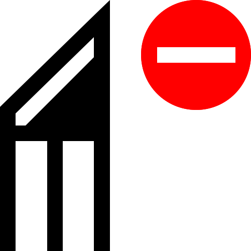

Панель инструментов содержит инструменты для рисования и редактирования изображений. Некоторые инструменты отображаются по умолчанию, а другие сгруппированы во всплывающих окнах. Открываются всплывающие окна для отображения набора связанных инструментов CorelDRAW. Маленькая выпадающая стрелка в правом нижнем углу кнопки панели инструментов указывает на всплывающее окно. Вы можете получить доступ к инструментам во всплывающем окне, щелкнув стрелку выпадающего меню. Открыв всплывающую подсказку, вы можете легко отсканировать содержимое других всплывающих подсказок, наведя курсор на любую из кнопок панели инструментов со стрелками всплывающей подсказки. Всплывающие окна функционируют как панели инструментов, когда вы перетаскиваете их из панели инструментов. Это позволяет просматривать все связанные инструменты во время работы.

В рабочем пространстве по умолчанию, щелкнув стрелку всплывающего окна в инструменте «Shape(Форма)», открывается всплывающее окно «Shape edit «(Редактирование формы)».
Некоторые инструменты в наборе инструментов не отображаются по умолчанию. Вы можете выбрать, какие инструменты отображать на панели инструментов.
На следующем рисунке показаны другие всплывающие окна в наборе инструментов CorelDRAW по умолчанию, которые могут помочь вам легче находить инструменты.

Для переключения между отображением и скрытием панели инструментов нажмите «Окно (Window)»«Панели инструментов (Toolbar)»«Панель инструментов (Toolbox)».
Чтобы скрыть или отобразить инструменты в наборе инструментов, нажмите кнопку «Быстрая настройка» и включите или отключите соответствующие флажки. Для получения дополнительной информации см. Настройка панели инструментов. В следующей таблице приведены описания инструментов в наборе инструментов CorelDRAW.
 Инструмент «Выбрать» позволяет выбирать, изменять размер, наклонять и вращать объекты.
Инструмент «Выбрать» позволяет выбирать, изменять размер, наклонять и вращать объекты.
Инструмент выбора произвольной формы позволяет выбирать объекты с помощью выделенной области.
Инструмент «Свободное преобразование» позволяет преобразовать объект с помощью инструментов «Свободное вращение», «Свободное отражение», «Свободный масштаб» и «Свободный перекос».
Инструмент «Форма» позволяет редактировать форму объектов.

Инструмент «Сглаживание» позволяет сглаживать изогнутые объекты, удаляя неровные края и уменьшая количество узлов.

Инструмент «Размытие» позволяет формировать объект, вытягивая растяжки или делая отступы вдоль его контура.

Инструмент «Twirl» позволяет создавать эффекты завихрения, перетаскивая их по краям объектов.
Инструмент «Attract» позволяет вам формировать объекты, привлекая узлы к курсору.

Инструмент «Repel» позволяет формировать объекты, отталкивая узлы от курсора.

Инструмент Smudge позволяет искажать векторный объект, перетаскивая его контур.

Инструмент Грубый позволяет искажать контур векторного объекта, перетаскивая его вдоль.

Инструмент «Обрезка» позволяет удалять ненужные области в объектах.
Инструмент «Нож» позволяет разделять объекты, группы объектов и растровые изображения по любому указанному вами пути.
 Инструмент удаления виртуального сегмента позволяет удалять части объектов, которые находятся между пересечениями.
Инструмент «Ластик» позволяет удалять области рисунка.

Инструмент «Масштаб» позволяет изменять уровень увеличения в окне рисования.

Инструмент «Панорамирование» позволяет контролировать, какая часть чертежа отображается в окне чертежа.

Инструмент «Freehand» позволяет рисовать отдельные отрезки и кривые.
Инструмент «Bézier» позволяет рисовать кривые по одному сегменту за раз.
Инструмент «Перо» позволяет рисовать кривые по одному сегменту за раз.